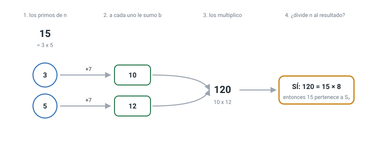
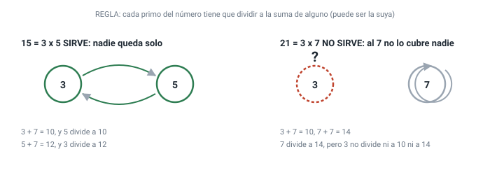
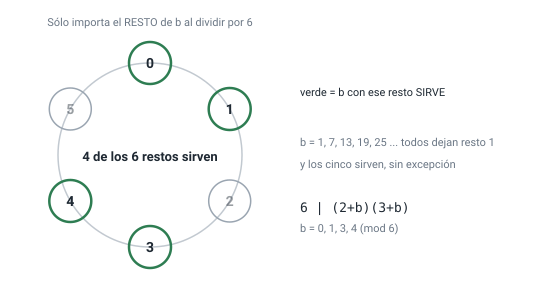
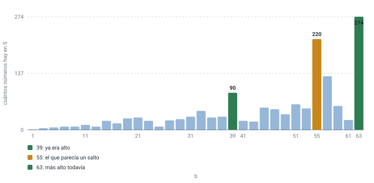

Explicación desde cero · sin conocimientos previos
Qué son los conjuntos Sb, de dónde salió la información, cómo se comprobó y para qué sirve. Si sabés dividir y te acordás de qué es un número primo, con eso alcanza.
Todo número entero está hecho de números primos, como una receta está hecha de ingredientes. El 15 está hecho de 3 y de 5. El 21, de 3 y de 7. El 30, de 2, 3 y 5.
Imaginá que cada ingrediente de la receta aporta algo al plato. Le pedimos a
cada primo que aporte él mismo más un número fijo, que vamos a llamar
b. Si b vale 7, entonces el primo 3 aporta
3 + 7 = 10, y el primo 5 aporta 5 + 7 = 12.
Después multiplicamos todo lo que aportaron: 10 × 12 = 120.
Y ahora viene la pregunta, que es una sola:
¿El número original entra justo en lo que aportaron sus propios primos? Es decir: ¿120 se puede dividir por 15 sin que sobre nada?
Sí: 120 ÷ 15 = 8, exacto, no sobra nada. Cuando eso pasa decimos
que el número se lleva bien con sus primos, y lo metemos en una bolsa que
llamamos S7 — la bolsa de los que funcionan cuando
b vale 7.
Con el 21 no pasa lo mismo. Sus primos son 3 y 7; aportan
3+7 = 10 y 7+7 = 14; el producto es
10 × 14 = 140; y 140 ÷ 21 da 6 con resto 14. No
entra justo. El 21 se queda afuera de la bolsa.
Eso es todo el objeto de estudio. Cambiando el número b cambia
la bolsa: hay una bolsa por cada b. Y la pregunta que este trabajo
contesta es cuántos números hay en cada bolsa, y por qué.
No hacen falta más que estas cinco. Cada una con un ejemplo chiquito.
12 ÷ 3 da exacto, sin resto.
Se escribe 3 | 12. En cambio 5 no divide a 12, porque
sobra 2.30 = 2 × 3 × 5. Todo número se puede partir así de una sola
manera, y ese es el hecho más importante de toda la aritmética.17 ÷ 5 da 3 y sobran 2: el resto es
2. Se escribe 17 ≡ 2 (mod 5), y se lee «17 deja resto 2 al
dividir por 5». Es la misma idea del reloj: a las 23 más 3 horas son las 2.Cuatro pasos, siempre los mismos.

n = 15 y
b = 7. Se factoriza, se suma b a cada primo, se
multiplica todo, y se pregunta si el número original divide al resultado.
Acá sí: 120 = 15 × 8.Hay una manera más cómoda de mirarlo, y es la que usamos para todo lo demás. En vez de multiplicar todo y después dividir, se puede revisar primo por primo:
La regla equivalente: cada primo del número tiene que dividir a la suma de alguno de los primos del número — puede ser la suma de otro, o la suya propia.
Con el 15 y b = 7: el 3 divide a 5 + 7 = 12 ✓, y el
5 divide a 3 + 7 = 10 ✓. Los dos están cubiertos, así que el 15
entra. Se dice que se cubren mutuamente.

7+7=14) pero al 3 no lo cubre nadie, y con que quede uno
solo afuera ya alcanza para que el número no entre.Tomá b = 3 y probá si el 10 entra en la bolsa.
Pista: 10 = 2 × 5. Sumale 3 a cada primo. Multiplicá.
Dividí por 10.
Respuesta: 2+3 = 5 y 5+3 = 8;
5 × 8 = 40; 40 ÷ 10 = 4, exacto. El 10 entra.
Y si lo mirás con la regla de cubrir: al 2 lo cubre el 5 (porque 2 divide a 8)
y al 5 lo cubre el 2 (porque 5 divide a 5).
Si te salió, ya entendés el objeto entero. Todo lo que sigue es
contar: cuántos números como el 10 hay para cada b.
Esta es la parte que casi nunca se cuenta, y es la que hace que se le pueda creer a lo demás. Acá nadie opinó: todo lo que se afirma salió de un programa, y el programa está publicado.
b, encuentra
todos los números de la bolsa. No una parte: todos, sin límite
superior. Eso se puede porque uno de los hallazgos demuestra que la lista se
termina (lo vemos en la sección 6).b desde 1 hasta
2001.Podría pasar que una bolsa tuviera infinitos números. No pasa. Se demuestra
que ningún primo de ningún número de la bolsa puede pasarse de
b + 2.
La razón cabe en tres renglones. Si un primo grande p divide a
q + b, y q es más chico que p, entonces
q + b es más chico que 2p, así que
q + b tiene que ser exactamente p. Ahora bien:
si b es impar y q también, la suma da par, y ningún
primo grande es par. Así que q sólo puede ser el 2, y entonces
p = b + 2. Uno solo, y sabemos cuál.
Este razonamiento, para el caso b = 1, ya se conocía:
es la demostración clásica de que 6 es el único número libre de cuadrados que
divide a la suma de sus divisores. No lo inventamos nosotros y así está dicho
en el trabajo. Lo que no encontramos publicado es la familia entera, para
cualquier b.
Este es el hallazgo que ordena todo lo demás. Si querés saber si un número
entra en la bolsa de b, no hace falta mirar b: sólo
su resto.
Para el 6, por ejemplo, los restos que sirven son 0, 1, 3 y 4. Entonces el 6
entra para b = 1, y también para 7, 13, 19, 25, 31… todos los que
dejan resto 1 al dividir por 6. Sin excepciones y sin necesidad de probarlos.

b deja alguno de esos seis restos, con
este reloj queda decidido el caso para todos los b del
mundo, que son infinitos.Y hay una fórmula que dice, para cualquier número, cuántas posiciones del reloj sirven: se multiplica, primo por primo, la cantidad de restos distintos que dejan sus propios primos. Para el 210 da 72 posiciones de 210. Se comprobó contra la definición para todos los números libres de cuadrados hasta 1000, sin una sola discrepancia.
Si el número tiene exactamente dos primos, la condición se cierra en una
cuenta muy simple. Cuando ninguno de los dos divide a b, resulta
que (p − 1) × (q − 1) tiene que dar b + 1.
O sea que en vez de probar primos uno por uno, se factoriza un solo número y salen todas las respuestas juntas. Es la diferencia entre buscar una llave probando todas las cerraduras y leer el número grabado en la llave.
Este resultado empezó por un error propio, y vale la pena contarlo porque es la parte más instructiva.
Se conocían los tamaños de las bolsas para b = 1, 3, 5, 7, 9 y
11 — daban 1, 4, 6, 8, 8 y 12 — y también el de b = 55, que daba
220. Parecía un salto: de 12 a 220. Y
durante un tiempo se buscó qué lo causaba.
No lo causaba nada, porque el salto no existía: nadie había calculado los
valores del medio. Al calcularlos, b = 39 ya daba
90 y b = 63 daba
274, más que el 55.

b
impar hasta 63. La barra de 55 llamaba la atención sólo porque las de al lado
nunca se habían dibujado.Un salto en los datos puede ser un descubrimiento o puede ser un agujero en lo que miraste. Antes de explicar una rareza, conviene revisar si la rareza es del mundo o del muestreo.
De paso quedó contestada la pregunta original: no hay fórmula para el
tamaño de la bolsa en función de b, y ahora se sabe por qué. El
reloj del punto (b) explica que la pertenencia mezcla el resto de b
con la estructura completa del número, y esa mezcla no se deja resumir. Se ve
en un ejemplo: b = 61 da 24 y b = 63 da 274, siendo
vecinos.
Porque cualquiera puede ejecutar un comando y verlo. El repositorio trae un programa que corre 30 comprobaciones en unos cuatro segundos, sin instalar nada.
Tres de esas comprobaciones merecen explicación, porque son las que distinguen un trabajo verificable de una afirmación:
Con honestidad: esto no cura nada ni acelera tu teléfono. Es matemática elemental, y su utilidad es la de casi toda la matemática elemental — que es mucha, pero indirecta:
Un trabajo honesto marca sus propios bordes. Estos son:
| No dice | Por qué |
|---|---|
Que el caso b = 1 sea nuevo |
Es clásico, y la demostración es la misma de siempre. Está declarado en el trabajo. |
| Que nadie haya sabido esto antes | Buscamos en OEIS, en cuatro bases bibliográficas, en Zenodo, en DataCite y en la web, y anotamos exactamente qué buscamos. No encontrarlo no es lo mismo que probar que no existe. |
Nada sobre b par |
Ahí la bolsa puede ser infinita, y decidirlo choca con un problema abierto de la matemática. No se tocó. |
| Una fórmula del tamaño | Se muestra que no la hay en el sentido elemental, y se explica por qué. Eso es distinto de tenerla. |
| Cómo sigue la tabla más allá de 2001 | Hasta ahí se calculó. Lo que no se calculó, no se afirma. |
| Palabra | Qué quiere decir | Ejemplo |
|---|---|---|
| Primo | Sólo lo dividen 1 y él mismo | 2, 3, 5, 7, 11 |
| Divide a | La división da exacta | 3 | 12 |
| Factorizar | Partir en producto de primos | 30 = 2×3×5 |
| Libre de cuadrados | Ningún primo se repite | 30 sí, 12 no |
| Resto (módulo) | Lo que sobra al dividir | 17 ≡ 2 (mod 5) |
| Radical | El producto de los primos distintos | rad(12) = 6 |
| σ(n) | La suma de todos los divisores | σ(6) = 1+2+3+6 = 12 |
| φ(n) | Cuántos números menores no comparten factor | φ(6) = 2 |
| Sb | La bolsa de este trabajo | 15 ∈ S₇ |
PRIOR_ART.md lista qué se buscó y dónde.